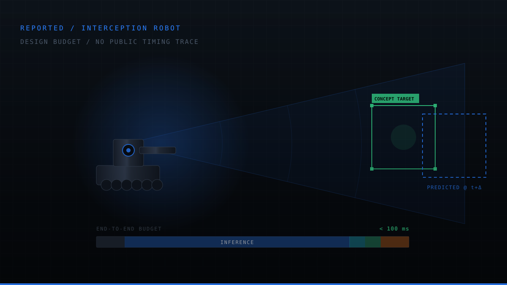
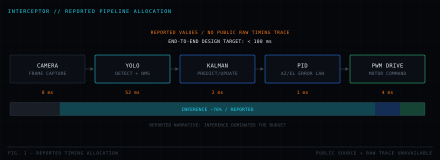

Home / Projects / PRJ-05 Interceptor
Interception Robot
YOLO DETECTION · KALMAN ESTIMATION · PID ACTUATION · <100 ms LOOP
A complete perception-to-actuation loop on a Raspberry Pi 4: see the target, estimate where it is going, and drive the actuators, with the entire chain held under a 100 ms latency budget, because in a tracking loop latency is indistinguishable from error.

01Problem
A tracking system that reacts to where the target was will always trail it. Every millisecond between photon and motor command becomes an angular lag that scales with target speed, and a neural detector on a CPU-only embedded board is slow enough that the lag dominates the error budget.
Two mechanisms fix this, and both were needed: shorten the loop, and predict across whatever loop time remains. That is the entire architecture, a latency budget enforced stage by stage, and a Kalman filter that produces an estimate at the moment of actuation rather than at the moment of detection.
Problem statement. Close a perception-to-actuation loop on Raspberry Pi-class hardware with end-to-end latency under 100 ms, and compensate for the residual latency in the estimator rather than accepting it as tracking error.
02Requirements
| ID | Requirement | Value | Verification |
|---|---|---|---|
| IN-001 | End-to-end closed-loop latency shall be bounded | < 100 ms | Instrumented timing |
| IN-002 | Target shall be detected from a live camera stream | YOLO detector | Detection run |
| IN-003 | Target state shall be estimated, not merely detected | Kalman filter | Track continuity test |
| IN-004 | Track shall survive missed detections | Predict-only coast | Dropout injection |
| IN-005 | Control output shall be smooth and bounded | PID + limits | Command trace |
| IN-006 | System shall run entirely on the embedded target | Raspberry Pi 4, CPU only | Hardware run |
| IN-007 | Per-stage latency shall be measurable | Instrumented | Profiling output |
03Constraints
- CPU-only inference. No GPU, no NPU, no accelerator, the detector runs on the same four cores as everything else.
- Single camera at fixed frame rate; the detector cannot run faster than frames arrive.
- PWM-driven motors with finite slew rate and mechanical inertia.
- Shared OS. Linux is not a real-time kernel, so scheduling jitter is part of the budget.
- Latency is a requirement, not an outcome. Every stage gets an allocation and is measured against it.
- Detection is unreliable by nature. The system must behave correctly on frames where the detector returns nothing.
- No cloud, no offboard compute. Everything closes on the vehicle.
04System design
A strictly staged pipeline with a published budget per stage. Making the budget explicit changed the engineering: once inference was measured at roughly three quarters of the total, every optimisation went there and nowhere else. Without the instrumentation, the natural instinct is to micro-optimise the control code, which occupies about one percent of the loop.

Design decisions
| Decision | Chosen | Rejected alternative | Rationale |
|---|---|---|---|
| DD-1 | Kalman filter between detector and controller | Drive the controller from raw detections | Raw detections are noisy, intermittent and already stale; the filter smooths, predicts, and survives dropouts |
| DD-2 | Neural detector | Classical colour/blob tracking | Robust to lighting and background variation that defeats threshold-based tracking |
| DD-3 | Predict to actuation time | Use the estimate at detection time | The estimate is already tens of milliseconds old when it reaches the motors; propagating it forward removes that lag from the error |
| DD-4 | Per-stage instrumentation | Measure end-to-end only | An end-to-end number tells you that you are slow; a per-stage breakdown tells you where |
| DD-5 | Independent azimuth/elevation loops | Coupled MIMO controller | The axes are mechanically near-decoupled, so two simple loops are easier to tune and to reason about |
05Mathematical models
Target state model
Predict / update
The predict step runs unconditionally. That is what makes a missed detection a graceful degradation , the covariance grows, the estimate coasts, and the controller keeps receiving a valid state instead of a gap.
Latency compensation
Control law
06Algorithms used
- YOLO single-shot detection with non-maximum suppression to resolve overlapping candidate boxes.
- Linear Kalman filter on a constant-velocity image-plane model, providing smoothing, prediction and dropout tolerance.
- Nearest-neighbour data association gated by predicted position, so a spurious detection elsewhere in the frame cannot capture the track.
- Latency compensation by forward-propagating the state through the measured capture-to-actuation interval.
- PID with anti-windup and output clamping on independent azimuth and elevation axes.
- Per-stage timing instrumentation feeding a live latency breakdown.
07Implementation
| Language | Python with OpenCV and NumPy |
|---|---|
| Detection | YOLO object detector, CPU inference |
| Estimation | Linear Kalman filter, constant-velocity model |
| Control | PID on azimuth and elevation, PWM motor drive |
| Platform | Raspberry Pi 4, embedded Linux |
| Instrumentation | Per-stage timestamps with a rolling latency histogram |
08Testing
- Filter unit tests. Known-trajectory inputs verify that the Kalman implementation converges and that the covariance behaves correctly under prediction-only operation.
- Detector characterisation. Detection rate and false-positive behaviour measured across lighting and background conditions.
- Dropout injection. Detections deliberately withheld for several consecutive frames to confirm the track coasts and re-acquires rather than resetting.
- Latency profiling. Each stage timestamped over long runs so the budget is characterised by distribution, not by a single lucky measurement.
- Closed-loop tracking. End-to-end runs against a moving target, with tracking error recorded against target speed.
09Performance
The budget breakdown is the most useful artefact this project produced. Capture, filtering, control and actuation together account for a small fraction of the loop; inference accounts for the rest. That single measurement determined every optimisation decision that followed, input resolution, model size, and frame scheduling, and ruled out a great deal of work that would have felt productive and changed nothing.
10Results
- Sub-100 ms closed-loop latency achieved on Raspberry Pi 4 with CPU-only inference.
- YOLO detection, Kalman state estimation and PWM motor control integrated into a single continuously running loop.
- Track continuity maintained across missed detections through prediction-only operation.
- Residual latency compensated in the estimator, converting a systematic tracking lag into a bounded error.
Plots and hardware photography for this project are being prepared. The source and generated output are in the repository.
11Engineering tradeoffs
| Tradeoff | Gained | Paid |
|---|---|---|
| Neural detector over classical vision | Robustness to lighting and background | Roughly three quarters of the latency budget |
| Lower input resolution | Faster inference, shorter loop | Reduced detection range and small-target sensitivity |
| Constant-velocity motion model | Cheap, stable, easy to tune | Lags during genuine target acceleration |
| Latency compensation by prediction | Removes systematic tracking lag | Amplifies estimate error during manoeuvres, predicting a wrong velocity forward makes it worse |
| Independent axis controllers | Simple tuning and diagnosis | Ignores whatever cross-axis coupling exists mechanically |
12Challenges
Inference dominating the loop
The first working version was well over budget, and the instinct was to optimise the control and filtering code. Instrumentation showed those stages together accounted for a few milliseconds. All of the achievable saving was in inference, input resolution and model configuration, and that is where the effort went.
Detection dropouts breaking the loop
Driving the controller directly from detections produced visible stutter whenever the detector missed a frame: the controller received no update, held its last command, and jerked when the detection returned. Placing the Kalman filter between detector and controller, with the predict step running unconditionally, turned a discontinuity into a smooth coast.
Scheduling jitter
On a non-real-time kernel, the same pipeline can take noticeably different wall-clock time from one cycle to the next. Compensating with a fixed nominal latency was therefore wrong, the compensation interval had to be measured per cycle from actual timestamps.
13Lessons learned
- Measure before optimising. Intuition about where time goes in a perception pipeline is reliably wrong.
- Latency is error. In a tracking loop, delay and inaccuracy are the same quantity expressed in different units.
- Put an estimator between perception and control. It decouples an unreliable, intermittent sensor from a controller that needs a continuous input.
- Compensate with measured time, not assumed time. On a general-purpose OS, nominal timing is a fiction.
- The budget is the design document. Publishing per-stage allocations made every subsequent decision obvious.
14Future work
- Quantised or distilled detector to cut the dominant latency term further.
- Interacting-multiple-model tracker so acceleration is handled rather than lagged, the same upgrade GHOST already implements.
- Multi-target tracking with proper data association instead of single-track nearest neighbour.
- Real-time kernel or CPU isolation to bound scheduling jitter.
- Feed-forward on the estimated target velocity to reduce the residual tracking error further.
15Gallery
Hardware photography and result plots for this project are being prepared. In the meantime the full source, commit history and any generated output live in the repository.